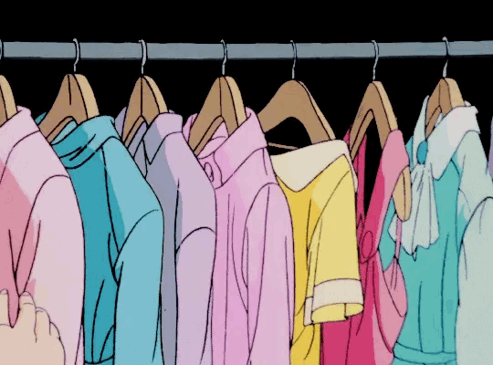
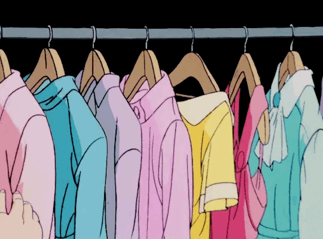

Vintage Clothes
Bienvenidos a la página informativa de ropa vintage, un espacio donde se explorará el mundo de las prendas que han resistido la prueba del tiempo. Aquí descubrirán la historia detrás de los estilos icónicos de décadas pasadas que poco a poco están volviendo a tener un fuerte impacto en la moda, aprenderán a identificar piezas auténticas y conocerán cómo la moda vintage continúa influyendo en las tendencias actuales. Además, encontrarán consejos sobre cómo incorporar estas prendas en su guardarropa, así como información sobre el transfondo y la conservación de estas joyas del pasado.
 
